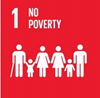
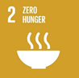
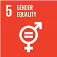
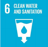
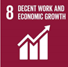
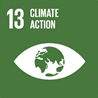

KRISHI PRAKRITI is an Agri-Tech initiative, we are committed to transforming the agricultural sector through innovative technologies, sustainable farming practices, and affordable digital solutions.
We work across multiple areas of agricultural development, including sustainable rice cultivation, agricultural waste management, carbon project development, drone technology, IoT-based monitoring, post-harvest management, cold storage design, and digital solutions for agricultural organizations.
At KRISHI PRAKRITI, we believe that collaboration is the foundation of innovation and sustainable development. We welcome partnerships with organizations, institutions, businesses, investors, researchers, and individuals who share our vision of transforming agriculture through technology, sustainability, and inclusive growth.
We are committed to building strong partnerships that turn innovative ideas into practical solutions, create economic opportunities for rural communities, empower farmers, and contribute to global sustainability.
Our mission goes beyond transforming agriculture; it is about transforming lives, restoring our relationship with nature, and creating a sustainable future for generations to come.
Through innovation, collaboration, and collective action, we strive to turn today's agricultural challenges into tomorrow's opportunities, making sustainability not just a global goal, but a reality on the ground.
"To build a sustainable, technology-enabled, and economically inclusive agricultural ecosystem. We envision a future where innovation reaches every farmer and rural community, natural resources are responsibly managed, agricultural emissions are reduced, and economic opportunities are accessible to all.
Our vision is to translate the United Nations Sustainable Development Goals (SDGs) into meaningful, measurable action through innovative agricultural initiatives that empower communities, protect the environment, and build a more sustainable globe."






Diagnose crop health in seconds. Our flagship mobile application analyzes leaf imagery in real-time to identify blights, mildews, and bacterial infections before they spread across your harvest.